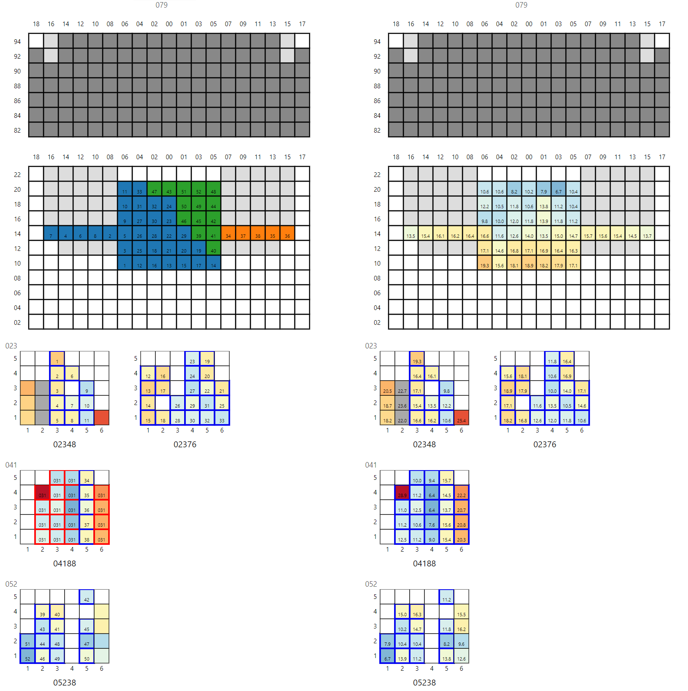
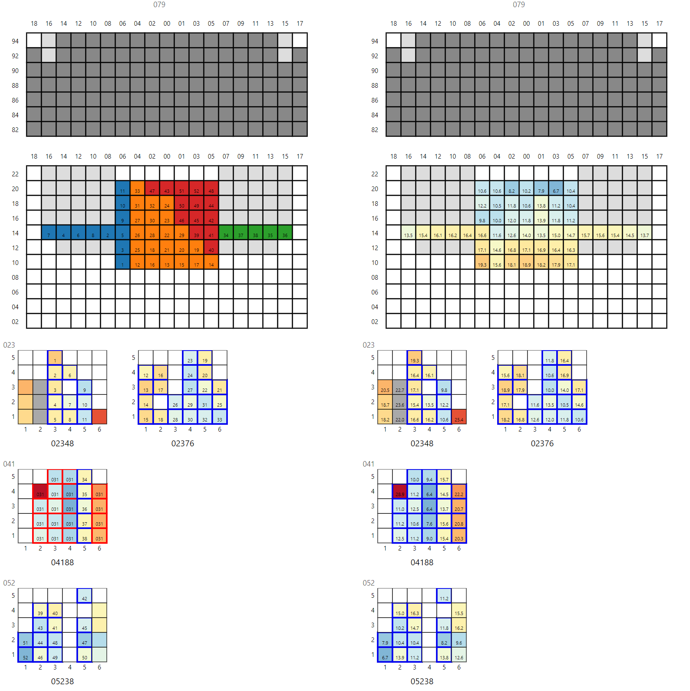
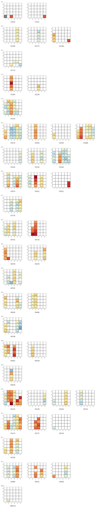
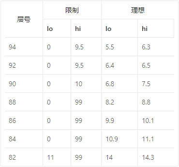

<div class="ddd">
    <p class="title">配载结果详情</p>
  </div>
  <div class="dddd">
    <p class="pid">uuid: {{this.uuid}}</p>
  </div>
  
  <div nz-row>
    <div nz-col [nzSpan]="18" [nzPush]="6">
      <nz-tabset [nzTabBarExtraContent]="extraTemplate" [nzSize]="large"  class="col"  *ngIf="this.jiade">
        <nz-tab nzTitle="配载结果">
            <nz-radio-group [(ngModel)]="radioValue">
                <label nz-radio nzValue="1">按箱区渲染</label>
                <label nz-radio nzValue="2">按区位渲染</label>
              </nz-radio-group>
              
              
        </nz-tab>
        <nz-tab nzTitle="遗留箱区">
          
        </nz-tab>
      </nz-tabset>
    </div>
    <div nz-col [nzSpan]="6" [nzPull]="18">
      <div class="cas">
        <nz-cascader [nzOptions]="nzOptions" [nzPlaceHolder]="'请选择箱组/贝位'" [(ngModel)]="values"
          (ngModelChange)="onChanges($event)"></nz-cascader>
      </div>
      <div class="score" *ngIf="this.jiade">
        <div nz-row>
          <div nz-col nzSpan="12" class="wenzi">最优解得分</div>
          <div nz-col nzSpan="12" class="wenzi">发箱段数量</div>
        </div>
        <div nz-row>
          <div nz-col nzSpan="12" class="fenshu">78.38</div>
          <div nz-col nzSpan="12" class="fenshu">14</div>
        </div>
      </div>
      <!-- <div class="but" >
        <button nz-button nzType="default" nzPopoverPlacement="right" nz-popover [(nzVisible)]="visible"
          (nzVisibleChange)="change($event)" nzPopoverTrigger="click" [nzPopoverContent]="contentTemplate">
          查看重量等级范围
        </button>
        <ng-template #contentTemplate>
          
        </ng-template>
      </div> -->
      <div class="inp"  *ngIf="this.jiade">
        <nz-input-group nzSearch [nzAddOnAfter]="suffixIconButton">
          <input type="text" nz-input placeholder="input search text" [(ngModel)]="value"/>
        </nz-input-group>
        <ng-template #suffixIconButton>
          <button nz-button nzType="primary" nzSearch><i nz-icon nzType="search"></i></button>
        </ng-template>
      </div>
  <div *ngIf="this.jiade">
    <nz-tabset [nzTabBarExtraContent]="extraTemplate" [nzSize]="small" class="tabset">
    <nz-tab nzTitle="1">
      <nz-table #fixedTable [nzData]="listOfData"  [nzScroll]="{ x: '600px', y: '225px' }">
  
        <thead>
          <tr>
            <th nzWidth='14%'>完成度</th>
            <th nzWidth='14%'>整取率</th>
            <th nzWidth='12%'>分数</th>
            <th nzWidth='18%'>数量</th>
            <th nzWidth='18%'>总数量</th>
            <th nzWidth='18%'>节点</th>
            <th nzWidth='28%' nzRight='0px'>操作</th>
          </tr>
        </thead>
        <tbody>
          <tr *ngFor="let data of fixedTable.data">
            <!-- <td>{{ data.completerate}}</td> -->
            <td></td>
            <td></td>
            <td>{{ data.socre}}</td>
            <td>{{ data.amount}}</td>
            <td>{{ data.sum}}</td>
            <td>{{ data.node}}</td>
            <td nzRight='0px'>
              <a>操作</a>
            </td>
          </tr>
        </tbody>
      </nz-table>
    </nz-tab>
    <nz-tab nzTitle="2"></nz-tab>
    <nz-tab nzTitle="3"></nz-tab>
    <nz-tab nzTitle="4"></nz-tab>
    <nz-tab nzTitle="5"></nz-tab>
    <nz-tab nzTitle="6"></nz-tab>
    <nz-tab nzTitle="7"></nz-tab>
  </nz-tabset>
  </div>
  
  
    </div>
  </div>
  
  
  
  